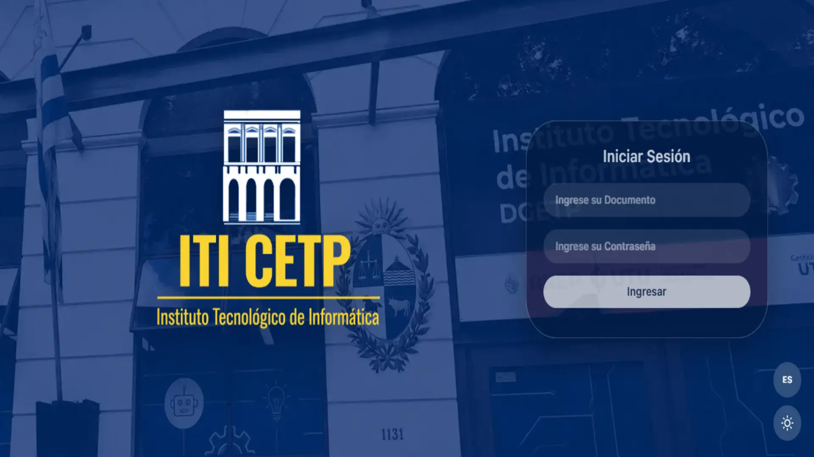
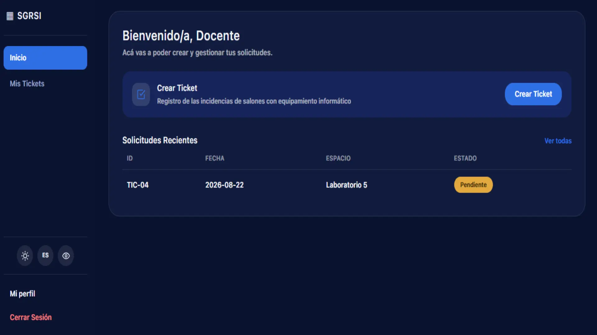
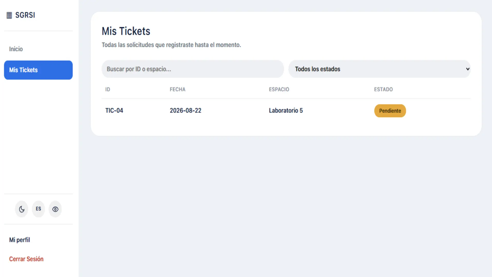
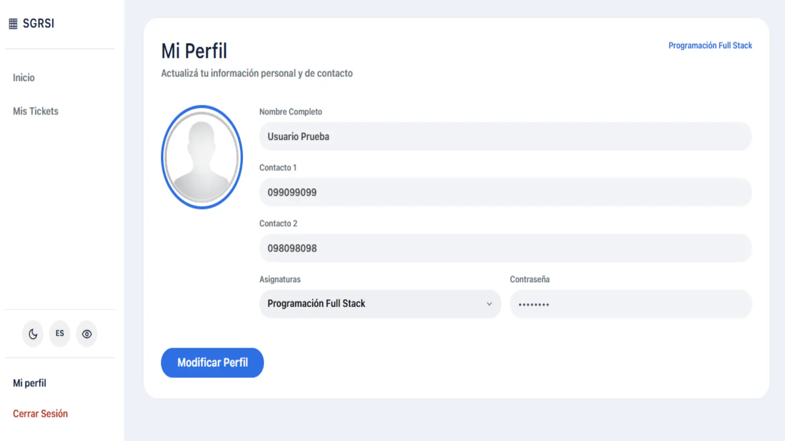

Analizamos
Identificamos necesidades, actores y procesos para comprender qué problema necesita una solución.
En MMIL Soluciones desarrollamos herramientas digitales orientadas a organizar procesos, automatizar tareas repetitivas y convertir necesidades reales en soluciones informáticas claras y utilizables.

MMIL Soluciones nace como un proyecto estudiantil interdisciplinario. Nuestro objetivo es aplicar conocimientos de desarrollo, diseño, infraestructura, seguridad y gestión para resolver problemas concretos mediante software.
No buscamos solamente crear una aplicación: trabajamos el ciclo completo, desde el relevamiento de una necesidad hasta su implementación, documentación y mejora continua.
Combinamos distintas áreas para desarrollar soluciones que reduzcan tareas manuales y mejoren la organización de la información.
Identificamos necesidades, actores y procesos para comprender qué problema necesita una solución.
Diseñamos e implementamos aplicaciones que centralizan información y automatizan operaciones repetitivas.
Probamos, documentamos y revisamos cada solución para aumentar su calidad, seguridad y facilidad de uso.
Algunas vistas del proceso y de las soluciones desarrolladas por el equipo.



Compartimos novedades, desarrollo y avances del trabajo realizado durante el año.